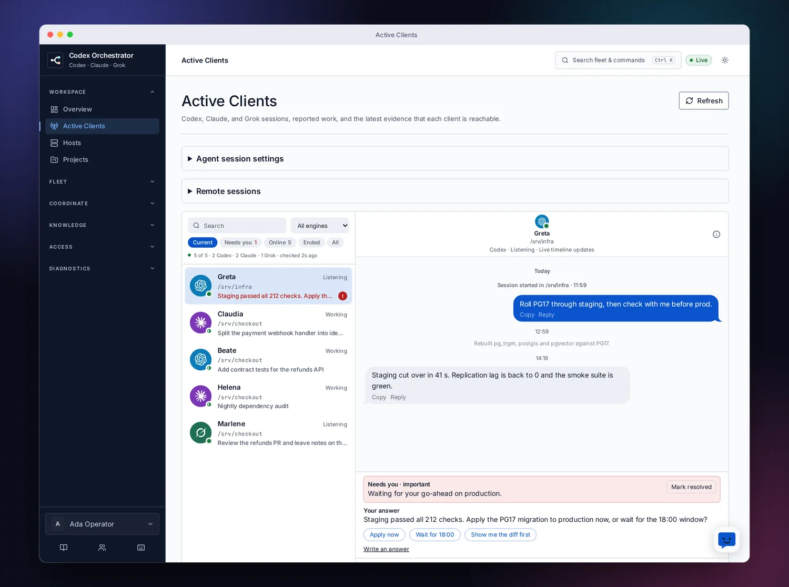

Self-hosted fleet management
Your terminal.
Your agents.
One fleet.
Codex on your laptop, Claude on the build server. With Codex Orchestrator, your agents share project knowledge, coordinate their work and start each session with the rules you set.
Shared control plane on your server
Day-to-day operations
What changes when you
manage CLIs together?
| Task | Standalone CLIs | With Orchestrator |
|---|---|---|
| Set up a host | Manage accounts, versions and settings on each machine. | Register a host, assign its engines and fetch signed configuration at launch. |
| Hand off context | Find the decisions from your last session and pass them along. | Agents read the same project decisions and can ask each other questions directly. |
| Develop in parallel | Agree on who edits each file and whose changes merge first. | Reserve resources and coordinate merges into shared branches through Git Director. |
| Follow the work | Open terminals on several hosts to check progress. | See active sessions and tasks in one console and answer questions there. |
The fleet console
Who’s working
on what?
Open a session from the Active Clients view. Read its assignment and answer a question in the conversation while the agent continues working on its host.
Take the product tour ↗

Installation
Start your
own fleet.
You’ll need a server with Git, Docker Compose v2, curl and OpenSSL. The installer sets up the services and prints your console URL once its checks pass.
Installation guide ↗Terminal bash
git clone https://github.com/christianreiss/codex-orchestrator.git
cd codex-orchestrator
bin/orchestrator setupNext, register your first host and assign it an engine.